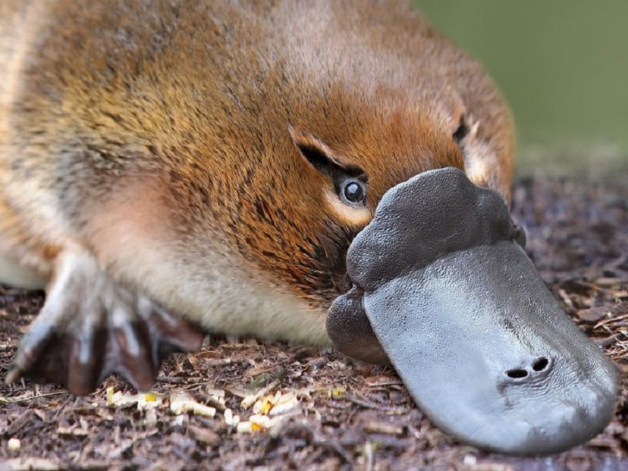
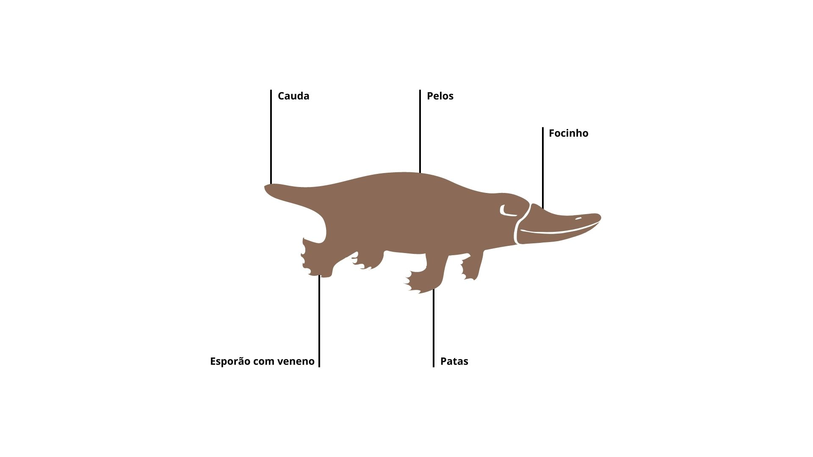

Ola, me chamo Arthur Costa e eu dedico este site para um dos melhores animais do mundo: OS ORNITORRINCOS! 
Bom a seguir temos uma imagem que mostra como funciona a divisão corporal de um ornitorrinco.
Como puderam perceber na imagem, o ornitorrinco é um animal beeem exótico, possuindo pelos, cauda de castor, pés de sapo, bico de pato e esporões com veneno nas patas traseiras. O veneno que ele carrega serve mais como uma maneira de se protejer e protejer os filhotes nos periodos de acasalamento.